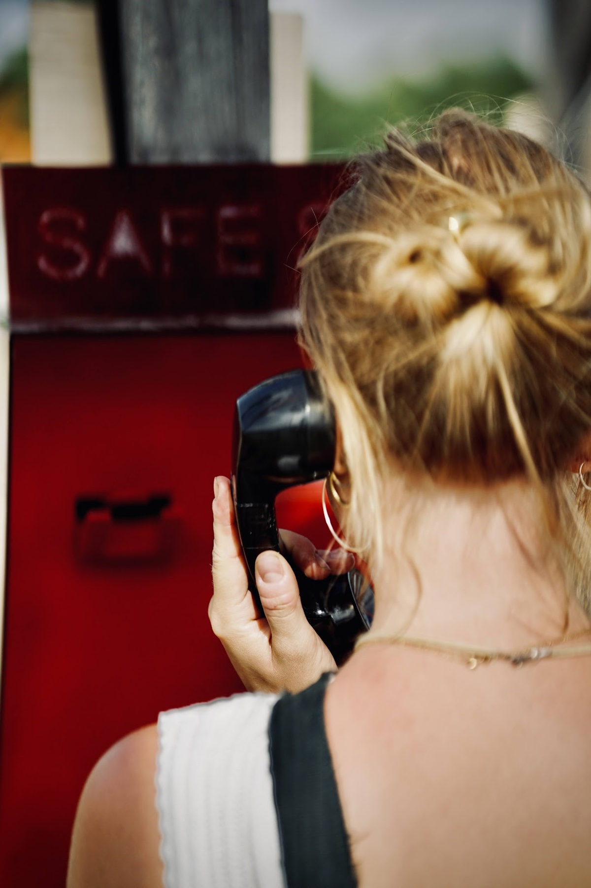
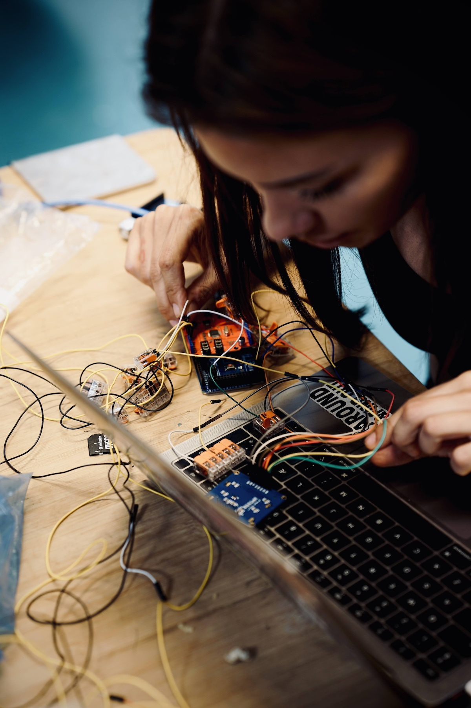

About
The Contraception Line is an interactive installation developed for Roskilde Festival. The project explores contraception, responsibility and sexual health through an anonymous and playful interaction.
The project
Visitors interact with the installation through a telephone receiver and physical buttons. Through a short series of questions, the installation collects anonymous responses and visualises the results.

My role
I worked on the concept, interaction design, physical prototyping and technical development of the installation.
Process
The project involved concept development, prototyping, testing and iterative development of both the physical and digital interaction.

Methods
Interaction Design
Prototyping
User Testing
Technology
Arduino
Physical Computing
Audio
LCD Display